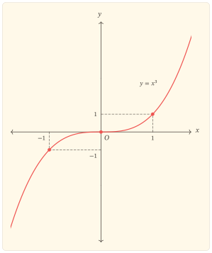
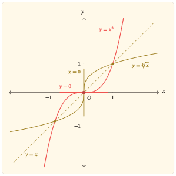

Hàm số \(y=x^3\) có một đặc điểm đáng chú ý. Nó đồng biến trên toàn bộ \(\mathbb{R}\) như hàm số \(y=x\), nhưng khác với đường thẳng ở chỗ độ dốc không giữ nguyên: khi tiến đến gốc tọa độ, độ dốc giảm dần về \(0\) rồi tăng trở lại. Ở điểm này, \(y=x^3\) cũng khác với \(y=x^2\). Cả hai đều có tiếp tuyến nằm ngang tại \(O\), nhưng đồ thị \(y=x^2\) quay đầu tại đó, còn đồ thị \(y=x^3\) vẫn tiếp tục đi lên. Vì sao cùng có đạo hàm bằng \(0\) mà một hàm đổi chiều biến thiên, còn hàm kia thì không? Câu trả lời nằm ở dấu của đạo hàm bậc nhất và cách độ dốc biến thiên qua \(0\): \(y=x^3\) vẫn giữ chiều đồng biến, đồng thời đồ thị chuyển từ cong xuống sang cong lên.
Nhận diện và tính đối xứng
Hàm số \(y=x^3\) được xác định trên toàn \(\mathbb{R}\).
Với \(f(x)=x^3\), \[ f(-x)=(-x)^3=-x^3=-f(x), \] nên \(y=x^3\) là hàm số lẻ và đồ thị đối xứng qua gốc tọa độ \(O(0,0)\). Đối xứng này giúp ta khôi phục nửa đồ thị bên trái từ nửa bên phải. Tuy nhiên, những kết luận toàn cục đối với hàm số lẻ vẫn cần được kiểm tra trên toàn miền, chứ không chỉ dựa vào hình đối xứng.
Hàm số lẻ
Cho hàm số \(f\) có tập xác định \(D\) đối xứng qua \(0\), nghĩa là nếu \(x\in D\) thì \(-x\in D\). Hàm số \(f\) được gọi là hàm lẻ nếu, với mọi \(x\in D\), ta có \[ f(-x)=-f(x). \] Khi đó đồ thị của \(f\) nhận gốc tọa độ làm tâm đối xứng. Nếu \(0\in D\) thì từ \(f(0)=-f(0)\) suy ra \(f(0)=0\).
Phương trình
\[ x^3=0 \]
chỉ có nghiệm \(x=0\), nên đồ thị của hàm số \(y=x^3\) giao với cả hai trục tọa độ tại cùng một điểm \(O(0,0)\).
Đẳng thức
\[ x^3=x\cdot x^2 \]
cho phép nhìn thấy hai vai trò khác nhau trong cùng một biểu thức. Nhân tử \(x\) giữ lại dấu của giá trị: khi \(x<0\) thì \(x^3<0\), còn khi \(x>0\) thì \(x^3>0\), bởi \(x^2\) luôn dương với \(x\ne0\). Vì thế, phần đồ thị bên trái gốc tọa độ nằm dưới trục hoành, còn phần bên phải nằm trên trục hoành.
Nhưng \(x^2\) không chỉ đứng đó mà không làm đổi dấu. Nó còn quyết định giá trị của \(x\) được thu nhỏ hay khuếch đại khi tạo thành \(x^3\). Nếu \(\lvert x\rvert<1\) thì \(x^2<1\), nên phép nhân với \(x^2\) làm cho
\[ \lvert x^3\rvert<\lvert x\rvert. \]
Bởi vậy, trong khoảng từ \(-1\) đến \(1\), đồ thị \(y=x^3\) nằm gần trục hoành hơn đường thẳng \(y=x\). Ngược lại, nếu \(\lvert x\rvert>1\) thì \(x^2>1\), nên
\[ \lvert x^3\rvert>\lvert x\rvert; \]
ra ngoài khoảng ấy, đồ thị \(y=x^3\) nằm xa trục hoành hơn \(y=x\). Tại \(x=-1\), \(0\) và \(1\), hai đồ thị gặp nhau.
Như vậy, cấu trúc \(x^3=x\cdot x^2\) đã cho ta một hình dung khá rõ trước cả khi dùng đạo hàm: nhân tử \(x\) quyết định đồ thị nằm về phía nào của trục hoành, còn nhân tử \(x^2\) làm nó ép sát về trục hoành khi ở gần gốc và tách xa dần khi \(\lvert x\rvert\) lớn hơn \(1\). Chính sự kết hợp hai vai trò ấy tạo nên một phần hình dạng đặc trưng của đồ thị \(y=x^3\).
Đồng biến nghiêm ngặt dù tồn tại điểm mà đạo hàm triệt tiêu
Có thể thấy tính đồng biến của \(x^3\) ngay từ đại số. Với hai số thực \(a<b\), \[ b^3-a^3=(b-a)(a^2+ab+b^2). \] Ta có \(b-a>0\) và \[ a^2+ab+b^2=\left(a+\frac{b}{2}\right)^2+\frac{3b^2}{4}>0, \] vì đẳng thức chỉ có thể xảy ra khi \(a=b=0\), trái với \(a<b\). Do đó \[ b^3-a^3>0. \] Vì thế \(y=x^3\) đồng biến nghiêm ngặt trên toàn \(\mathbb{R}\). Lập luận này cho thấy rõ thứ tự logic: tính đồng biến là một thuộc tính của hàm số, không phải một khái niệm được định nghĩa bằng đạo hàm. Đạo hàm là một công cụ mạnh để nhận diện, kiểm tra và giải thích thuộc tính ấy khi các điều kiện áp dụng đã được thỏa mãn.
Hai giới hạn ở vô cực phù hợp với chiều biến thiên vừa xác lập: \[ \lim_{x\to-\infty}x^3=-\infty \] và \[ \lim_{x\to+\infty}x^3=+\infty. \] Do hàm liên tục và đồng biến nghiêm ngặt từ \(-\infty\) đến \(+\infty\), tập giá trị của hàm số là toàn bộ \(\mathbb{R}\). Tương đương, với mỗi \(m\in\mathbb{R}\), phương trình \(x^3=m\) có đúng một nghiệm thực.
Đạo hàm bậc nhất cho biết độ dốc của tiếp tuyến với đồ thị:
\[ y^\prime=3x^2. \]
Với \(x\ne0\), ta có \(y^\prime>0\), còn tại \(x=0\),
\[ y^\prime(0)=0. \]
Vì vậy, tại gốc tọa độ, đồ thị có một tiếp tuyến nằm ngang. Tuy nhiên, đạo hàm bằng \(0\) tại một điểm chưa đủ để kết luận rằng hàm số đạt cực trị ở đó; điều quan trọng là dấu của đạo hàm thay đổi thế nào khi đi qua điểm ấy.
Ở đây,
\[ y^\prime=3(x-0)^2. \]
Nghiệm \(x=0\) của phương trình \(y^\prime=0\) có bội \(2\). Số mũ chẵn làm cho \((x-0)^2\) dương ở cả hai phía của \(0\): đạo hàm giảm về \(0\) khi \(x\) tiến đến \(0\) từ bên trái, rồi tăng trở lại từ \(0\) khi \(x\) đi sang bên phải, nhưng không đổi sang giá trị âm.
Bởi vậy, độ dốc của đồ thị có lúc bằng \(0\) nhưng không đổi dấu. Hàm số vẫn tiếp tục đồng biến qua \(0\), nên \(O(0,0)\) không phải là điểm cực trị. Tiếp tuyến của đồ thị tại đây là
\[ y=0. \]
Nghiệm bội và sự đổi dấu
Giả sử gần \(x=a\) một biểu thức liên tục \(g\) có dạng \[ g(x)=(x-a)^m h(x), \] trong đó \(h(a)\ne0\). Khi đó \(a\) là một nghiệm bội \(m\) của \(g\). Vì \(h\) giữ nguyên dấu trong một lân cận đủ nhỏ của \(a\), sự đổi dấu của \(g\) được quyết định bởi \((x-a)^m\). Khi \(m\) lẻ, \((x-a)^m\) đổi dấu khi đi qua \(a\), còn khi \(m\) chẵn, \((x-a)^m\) không đổi dấu khi đi qua \(a\).
Vì vậy, đối với đạo hàm, một nghiệm bội chẵn thường làm \(y^\prime\) giữ nguyên dấu ở hai phía, còn một nghiệm bội lẻ làm \(y^\prime\) đổi dấu, miễn là phần còn lại của phép phân tích không triệt tiêu tại điểm đang xét.
Độ dốc thay đổi và điểm uốn
Trước khi dùng đạo hàm bậc hai, chính công thức \(y^\prime=3x^2\) đã cho thấy độ dốc biến đổi như thế nào. Nếu \(x_1<x_2\le0\) thì \(|x_1|>|x_2|\), nên \[ 3x_1^2>3x_2^2. \] Vì vậy, khi đi từ trái sang phải trên \((-\infty,0]\), độ dốc giảm dần về \(0\). Ngược lại, nếu \(0\le x_1<x_2\) thì \[ 3x_1^2<3x_2^2, \] nên độ dốc tăng dần khi rời gốc về phía phải. Các bất đẳng thức này đã mô tả được chuyển động “phẳng dần rồi dốc dần” mà chưa cần lấy đạo hàm lần thứ hai.
Đạo hàm bậc hai nén đúng xu hướng vừa chứng minh vào một công thức: \[ y^{\prime\prime}=6x. \] Khi \(x<0\), ta có \(y^{\prime\prime}<0\), nên \(y^\prime\) giảm; khi \(x>0\), ta có \(y^{\prime\prime}>0\), nên \(y^\prime\) tăng. Đạo hàm bậc hai vì thế cho phép nhận biết nhanh sự thay đổi của độ dốc mà trước đó ta đã thấy trực tiếp từ bất đẳng thức. Khi tiến đến gốc từ bên trái, đồ thị vẫn đi lên nhưng ngày càng phẳng; sau khi đi qua gốc, nó tiếp tục đi lên và ngày càng dốc hơn. Nói theo tính cong, đồ thị chuyển từ cong xuống sang cong lên tại \(O\); đây chính là cơ chế hình học của điểm uốn tại gốc.
Điểm uốn của đồ thị
Một điểm \(A(a,f(a))\) được gọi là điểm uốn khi đồ thị đổi tính cong khi đi qua \(A\). Nếu \(f^{\prime\prime}\) tồn tại ở hai phía của \(a\) và đổi dấu khi qua \(a\), thì \(A\) là một điểm uốn.
Điều kiện \(f^{\prime\prime}(a)=0\) tự nó chưa đủ để kết luận có điểm uốn; điều quyết định là sự đổi tính cong của đồ thị.
Với \(y=x^3\), \(y^{\prime\prime}=6x\) đổi dấu từ âm sang dương khi đi qua \(0\), nên \(O(0,0)\) là điểm uốn. Đồng thời, vì \(x^3<0\) khi \(x<0\) và \(x^3>0\) khi \(x>0\), đường cong nằm ở hai phía khác nhau của tiếp tuyến \(y=0\) và đi xuyên qua tiếp tuyến ấy tại gốc. Việc đi xuyên qua tiếp tuyến là một hệ quả hình học trong trường hợp này; tiêu chuẩn nhận diện điểm uốn vẫn là sự đổi tính cong.
Bảng biến thiên và đồ thị tổng hợp
Những kết quả trên có thể nén vào bảng biến thiên sau. Hai dấu \(+\) nằm ở các cột biểu diễn hai khoảng \((-\infty,0)\) và \((0,+\infty)\); chúng không phải là giá trị của đạo hàm tại \(\pm\infty\).
| \(x\) | \(-\infty\) | \(0\) | \(+\infty\) | ||
|---|---|---|---|---|---|
| \(y^\prime\) | \(+\) | \(0\) | \(+\) | ||
| \(y\) | \(-\infty\) | \(\nearrow\) | \(0\) | \(\nearrow\) | \(+\infty\) |
Bảng cho thấy một điểm dừng duy nhất tại \(x=0\) nhưng không có sự đổi chiều tăng. Khi đọc cùng dấu của \(y^{\prime\prime}\), ta còn thấy rõ hơn cấu trúc địa phương: nhánh bên trái vẫn tăng nhưng phẳng dần khi tiến đến gốc; nhánh bên phải tiếp tục tăng và dốc dần khi rời gốc.

Vì sao \(y=x^2\) quay đầu còn \(y=x^3\) đi qua gốc?
Hai hàm \(y=x^2\) và \(y=x^3\) đều có tiếp tuyến nằm ngang tại gốc, nhưng cơ chế tại đó khác nhau.
| Quan hệ tại \(x=0\) | \(y=x^2\) | \(y=x^3\) |
|---|---|---|
| Đạo hàm | \(y^\prime=2x\) | \(y^\prime=3x^2\) |
| Bội của nghiệm \(y^\prime=0\) | \(1\) — bội lẻ | \(2\) — bội chẵn |
| Dấu của \(y^\prime\) qua \(0\) | \(-\to+\) | \(+\to+\) |
| Hệ quả về biến thiên | giảm rồi tăng | tăng ở cả hai phía |
| Cực trị tại gốc | cực tiểu | không có cực trị |
| Đạo hàm bậc hai | \(y^{\prime\prime}=2>0\) | \(y^{\prime\prime}=6x\) đổi dấu |
| Quan hệ với tiếp tuyến \(y=0\) | \(x^2\) có bội \(2\), đồ thị ở cùng một phía | \(x^3\) có bội \(3\), đồ thị đi qua tiếp tuyến |
Bảng này làm rõ hai vai trò khác nhau của tính chẵn lẻ của số bội. Bội của nghiệm của \(y^\prime\) kiểm soát khả năng đổi dấu của đạo hàm và do đó liên quan trực tiếp đến cực trị. Bội của nghiệm của \(f(x)-T(x)\), với \(T\) là tiếp tuyến tại điểm đang xét, mô tả cách đường cong tiếp xúc với tiếp tuyến: bội chẵn giữ đường cong về một phía, còn bội lẻ cho phép đường cong đi qua tiếp tuyến.
Với \(y=x^3\), hai thông tin ấy kết hợp với nhau: \(y^\prime\) có nghiệm bội chẵn nên không xuất hiện cực trị, trong khi \(y^{\prime\prime}\) đổi dấu và \(y-T=x^3\) có nghiệm bội lẻ nên gốc tọa độ là một điểm uốn nơi đường cong đi qua tiếp tuyến ngang.
Từ tính đồng biến đến hàm ngược
Tính đồng biến nghiêm ngặt cùng tập giá trị \(\mathbb{R}\) còn cho một hệ quả tự nhiên. Hàm \[ f\colon \mathbb{R}\to\mathbb{R} \] được cho bởi \(f(x)=x^3\) là một-một và phủ hết \(\mathbb{R}\), nên có hàm ngược trên toàn trục số: \[ f^{-1}(x)=\sqrt[3]{x}. \] Đồ thị của \(y=x^3\) và \(y=\sqrt[3]{x}\) đối xứng qua đường thẳng \(y=x\). Phép đối xứng này biến tiếp tuyến ngang \(y=0\) của đồ thị \(y=x^3\) tại gốc thành tiếp tuyến đứng \(x=0\) của đồ thị hàm ngược. Vì vậy, hiện tượng “phẳng lại” của \(x^3\) tại gốc được nhìn từ hàm ngược thành một tiếp tuyến đứng.

Trên hình, gốc tọa độ nằm trên trục đối xứng \(y=x\), nên được giữ cố định qua phép phản xạ. Điểm uốn tại gốc của \(y=x^3\) tương ứng với điểm uốn có tiếp tuyến đứng của \(y=\sqrt[3]{x}\). Cả hai hàm đều đồng biến và không có cực trị, vì vậy trong cặp đồ thị này không có điểm cực trị nào để phản chiếu. Hai đoạn tiếp tuyến được nhấn tại gốc cho thấy trực tiếp quan hệ ngang–đứng dưới phép đối xứng.
Mối liên hệ này không phải một tính chất riêng của công thức lũy thừa bậc ba. Khi một hàm một-một có hàm ngược, việc phản xạ đồ thị qua \(y=x\) chuyển các quan hệ hình học của hàm sang những quan hệ tương ứng của hàm ngược. Tuy nhiên, mỗi kết luận vi phân vẫn phải được kiểm tra với các điều kiện thích hợp tại điểm đang xét.
Nhìn lại điểm dừng tại gốc
Tại \(O(0,0)\), ba hiện tượng xảy ra đồng thời nhưng cần được phân biệt.
Trước hết,
\[ y^\prime(0)=0 \]
cho biết độ dốc của tiếp tuyến bằng \(0\), nên đồ thị có tiếp tuyến nằm ngang tại \(O\). Riêng điều kiện này chưa cho biết hàm số có đạt cực trị hay không.
Muốn biết điều gì xảy ra với chiều biến thiên, cần xét dấu của đạo hàm bậc nhất. Với \(y=x^3\), ta có \(y^\prime=3x^2>0\) ở cả hai phía của \(0\). Đạo hàm chỉ bằng \(0\) tại chính điểm ấy mà không đổi dấu khi đi qua nó. Vì vậy, hàm số không đổi chiều biến thiên: trước và sau \(0\), nó vẫn đồng biến. Điểm \(O\) do đó không phải là điểm cực trị.
Đạo hàm bậc hai cho một thông tin khác. Dấu của \(y^\prime\) cho biết chiều biến thiên của \(y\); còn dấu của \(y^{\prime\prime}\) cho biết chiều biến thiên của chính \(y^\prime\). Ở đây,
\[ y^{\prime\prime}=6x. \]
Khi \(x<0\), đạo hàm \(y^\prime\) giảm; khi \(x>0\), đạo hàm \(y^\prime\) tăng. Trên đồ thị, điều đó có nghĩa là độ dốc giảm dần về \(0\) khi tiến đến gốc từ bên trái, rồi tăng dần từ \(0\) khi đi sang bên phải. Đồ thị vì thế chuyển từ cong xuống sang cong lên tại \(O\). Nói cách khác, đồ thị đổi tính cong và \(O\) là một điểm uốn.
Như vậy, đạo hàm bậc nhất và đạo hàm bậc hai đang mô tả hai tầng biến thiên khác nhau. Dấu của \(y^\prime\) cho biết \(y\) đang tăng hay giảm; dấu của \(y^{\prime\prime}\) cho biết \(y^\prime\) đang tăng hay giảm. Trên đồ thị, tầng thứ nhất biểu hiện thành việc đường cong đi lên hay đi xuống, còn tầng thứ hai biểu hiện thành việc đường cong cong lên hay cong xuống.
Vì thế, phương trình \(y^\prime=0\) chỉ xác định những điểm cần tiếp tục khảo sát. Muốn kết luận về cực trị, phải xét xem đạo hàm bậc nhất có đổi dấu và hàm số có đổi chiều biến thiên hay không. Muốn kết luận về điểm uốn, phải xác nhận đồ thị có đổi tính cong hay không. Số bội của một nghiệm có thể giúp nhận ra cơ chế đổi dấu của đạo hàm, nhưng không thay thế việc kiểm tra điều kiện của kết luận đang xét.
Bài tập
Tính lẻ, đồng biến và điểm uốn tại gốc tọa độ
Bài 1. Từ công thức đến tính đồng biến
Cho hàm số \(y=x^3\).
- Chứng minh hàm số là hàm lẻ và nêu ý nghĩa hình học của tính chất này.
- Với \(a<b\), phân tích \(b^3-a^3\) thành nhân tử và chứng minh trực tiếp rằng \(a^3<b^3\). Từ đó kết luận hàm số đồng biến nghiêm ngặt trên \(\mathbb{R}\) mà chưa dùng đạo hàm.
- Tính \(y^\prime\). Xác định bội của nghiệm \(x=0\) của phương trình \(y^\prime=0\) và dùng tính chẵn lẻ của số bội để giải thích vì sao đạo hàm không đổi dấu qua \(0\).
Bài 2. Tiếp tuyến, điểm uốn và hàm ngược
Cho hàm số \(y=x^3\).
- Từ \(y^\prime=3x^2\), dùng bất đẳng thức để chứng minh độ dốc giảm dần khi \(x\) tiến đến \(0\) từ bên trái và tăng dần khi \(x\) rời \(0\) về bên phải. Sau đó tính \(y^{\prime\prime}\) để kiểm tra lại xu hướng ấy, chứng minh \(O(0,0)\) là điểm uốn và viết phương trình tiếp tuyến của đồ thị tại \(O\).
- Chứng minh tập giá trị của hàm số là \(\mathbb{R}\) và suy ra hàm số có hàm ngược trên \(\mathbb{R}\).
- Tìm công thức của hàm ngược. Dựa vào phép đối xứng qua \(y=x\) và hình minh họa trong bài, giải thích vì sao tiếp tuyến ngang của \(y=x^3\) tại gốc tương ứng với một tiếp tuyến đứng của đồ thị hàm ngược, đồng thời nêu điều gì xảy ra với điểm uốn và vì sao không có cực trị nào cần phản chiếu.
Từ \(y=x^3\) đến các hàm bậc ba khác
Bài 3. Điểm uốn được tịnh tiến
Cho hàm số \[ y=x^3-3x^2+3x. \]
- Viết hàm số dưới dạng một phép tịnh tiến của \(y=x^3\).
- Phân tích đạo hàm để giải thích vì sao hàm số vẫn đồng biến trên \(\mathbb{R}\) và không có cực trị.
- Xác định điểm uốn và tiếp tuyến tại điểm uốn. So sánh vai trò của điểm này với gốc tọa độ của \(y=x^3\).
Bài 4. Khi nghiệm của đạo hàm tạo cực trị
Cho hàm số \(y=x^3-3x\).
- Tính \(y^\prime\) và tìm các nghiệm của phương trình \(y^\prime=0\).
- Xét dấu của \(y^\prime\) ở hai phía của từng nghiệm và kết luận về các điểm cực trị.
- So sánh với nghiệm \(x=0\) của đạo hàm của \(y=x^3\), rồi phát biểu tiêu chí nhận diện cực trị dựa trên sự đổi dấu của \(y^\prime\). Nêu rõ vì sao điều kiện \(y^\prime(a)=0\) riêng lẻ chưa đủ.